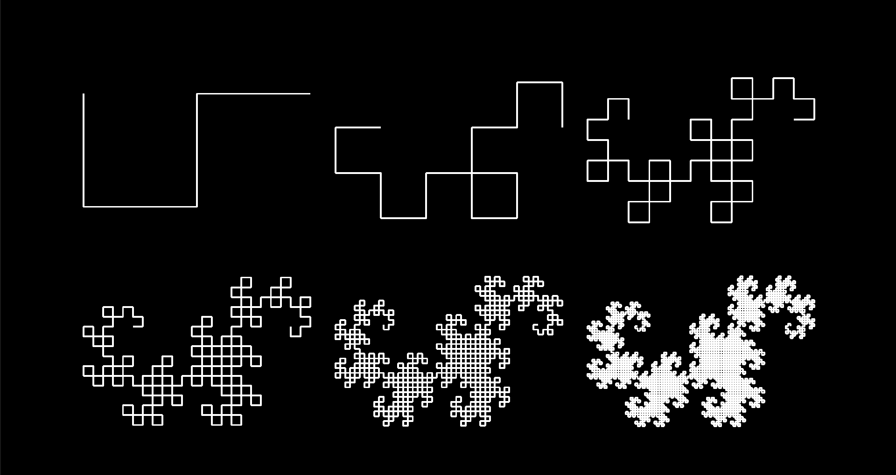
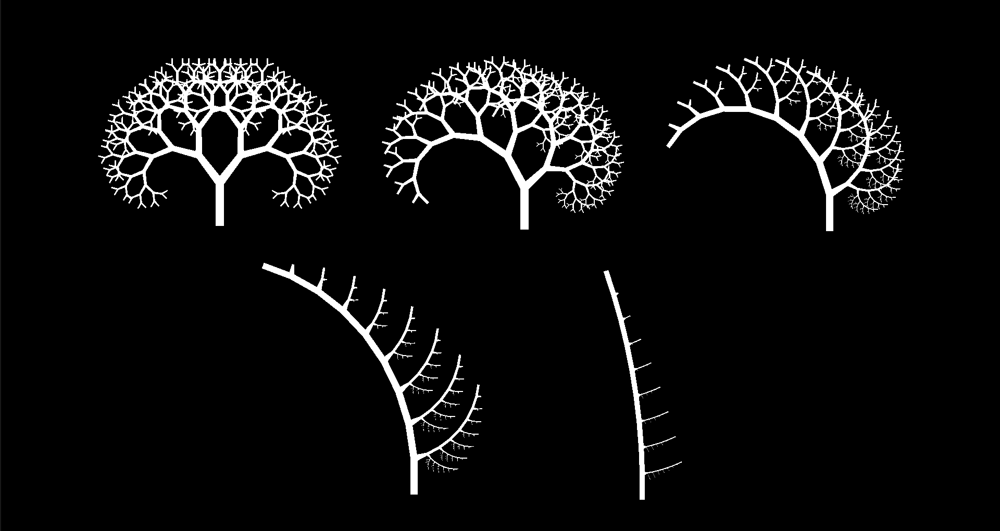

Key Achievements Carved jutting, uncanny landforms out of marching cubes. Designed and implemented an animated eye strain shader with parametric L-systems. Later introduced custom, grammar-based text generation to produce procedural narratives.
Made With DirectX 11, C++, HLSL. Grade A+Concrete Earth was created for one of my graphics modules, focused on procedurally generating models and post-processing effects within the Direct3D 11 render pipeline. The project draws greatly from nuclear semiotics, the open problem of how scientists might ward future civilisations off of radioactive waste repositories. My goal was to generate a shunned land, and with it the pervasive feeling that "This is not a place of honour".
While they're good enough for generating most terrain, height maps struggle with concavity. Each of their (x, y) coordinates must correspond to exactly one height z, so they can't produce overhangs or other jutting landscape features. Concrete Earth therefore takes a different approach.
Imagine splitting a cube into an n-by-n-by-n grid, and using a field f(x, y, z) to assign a scalar value to each grid-point. In each cell, triangular faces are used to partition off the points with values lower than some constant c, such that the overall grid approximates the isosurface f(x, y, z) = c. This is (a gross oversimplification of) the marching cubes algorithm, and it's maybe the single coolest technique I learned about all year.
After setting up said algorithm in Concrete Earth - basically just porting Paul Bourke's tutorial into DirectX - all that remains is designing the field f itself. I've used 3D fractal Brownian motion to create a natural, plateauing landscape, combined with (noiseless) equations for cones, cuboids, etc., to build in uncanny physical structures strangely unaffected by weathering or erosion. A further field is used to bound these models within a hexagonal prism, in line with the prototype's isometric, hex-based mechanics.
For all my time as a maths undergrad, I'd never come across formal grammars before this project. Intuitively, a grammar just a set of symbols S, paired with some set of production rules P. Applying those rules recursively, though, can create long sentences with rich, self-similar structures...
Consider a grammar with a set of symbols S = { F, G, +, - }, and production rules P = { F ↦ F+G, G ↦ F-G }. Iterating from the starting sentence "F", a sequence emerges on applying the rules over and over:
How could such abstract mathematics relate to graphics? L-systems visualise grammars as turtle drawings, treating each symbol in S as its own instruction. In the above example, we might read F, G as draw a line while stepping forward, and ± as turn ±90° on the spot. Our sentences therefore encode a sequence of fractal dragon curves.

In Concrete Earth, L-systems were used to generate the veins of my procedural eye-strain overlay. However, this would require some generalisation. First, symbols were parameterised, each storing a set of variables (e.g. line width, length) that would also be transformed under the production rules. This allowed me to replicate Mair Zamir's model of blood vessel bifurcation within my DirectX framework. Adding a further stochastic component - with production rules applied according to some random distribution - made the veins look altogether more natural.

In the finished post-processing effect, the terrain and the 2D blood vessels are rendered to two separate textures, then blended together by a subsequent pixel shader. This shader also adds a simple vignette effect, pulsing like a heartbeat.
The blood vessel grows according to intensity, a cumulative value tied the player's state in-game. This growth is staggered, with main arteries emerging first and then smaller capillaries sprouting off - a rather visceral piece of procedural animation.
Coming back to grammars, the very same formalism can be applied to procedural storytelling. A stochastic, context-free grammar like Kate Compton's Tracery - or Mad Libs, for that matter - can be used to recursively generate text. A character's name, for example, might be iterated as any of
(where a set of production rules is assigned to each bracketed, "non-terminal" symbol).
I've included such a story grammar in Concrete Earth, along with some extra, context-sensitive components. My implementation weights production rules by recency, prioritising phrases and sentence structures the player hasn't seen lately; it also remembers descriptions of any NPCs, for consistency. By passing in the player's position, the grammar can generate text descriptions of their nearby landforms. There is even an attempt to encode constraints on production rules, although I can't see it scaling well (it's hard to encode a high-level understanding of all the connotations of different words).
The finished product is, at the end of the day, just a technical showcase: I'd argue it's been much more fun to build than it is to actually play. That's why, while I've no intentions of develop Concrete Earth any further, I've continued to play about with the underlying DX11 framework, honing my skills as a graphics programmer.
Being interested in navigational AI, I figured it'd be a good challenge to implement Sebastian Lague's model of pheromone-based pathfinding for myself. To efficiently simulate a million ants (right), I'd of course need a compute shader - and therefore, I'd need to learn how to actually set one up in DirectX! Initialising the buffers correctly, learning where to use SRVs versus UAVs, even optimising the shader itself, required a lot of reading, and just as much trial and error (for context, Lague's version is made in Unity, so I couldn't port it without fully understanding my own render pipeline). That my code is now working as intended speaks not just to perseverance, but a passion for graphics programming, and C++ in general.